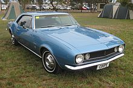
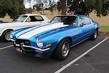
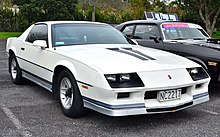
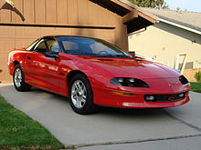
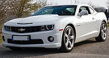

The Chevrolet Camaro is a mid-size American automobile manufactured by Chevrolet, classified as a pony car. It first went on sale on September 29, 1966, for the 1967 model year and was designed to compete with the Ford Mustang. The Camaro shared its platform and major components with the Firebird, produced by General Motors' Pontiac division that was also introduced for 1967.
Four distinct generations of the Camaro were developed before production ended in 2002. The nameplate was revived on a concept car that evolved into the fifth-generation Camaro; production started on March 16, 2009.
Background
Before any official announcement, reports began running during April 1965 within the automotive press that Chevrolet was preparing a competitor to the Ford Mustang, code-named Panther. On June 21, 1966, around 200 automotive journalists received a telegram from General Motors stating, "...please save noon of June 28 for important SEPAW meeting. Hope you can be on hand to help scratch a cat. Details will follow...(signed) John L. Cutter – Chevrolet public relations – SEPAW secretary." The following day, the same journalists received another General Motors telegram stating, "Society for the Eradication of Panthers from the Automotive World will hold first and last meeting on June 28...(signed) John L. Cutter – Chevrolet public relations SEPAW secretary." These telegrams puzzled automotive journalists.
On June 28, 1966, General Motors held a live press conference in Detroit's Statler-Hilton Hotel. It was the first time that 14 cities were connected in real-time for a press conference via telephone lines. Chevrolet general manager Pete Estes started the news conference stating that all attendees of the conference were charter members of the Society for the Elimination of Panthers from the Automotive World and that this would be the first and last meeting of SEPAW. Estes then announced a new car line, project designation XP-836, with a name that Chevrolet chose in keeping with other car names beginning with the letter C such as the Corvair, Chevelle, Chevy II, and Corvette. He claimed the name, "suggests the comradeship of good friends as a personal car should be to its owner" and that "to us, the name means just what we think the car will do... go." The Camaro name was then unveiled.[8] Automotive press asked Chevrolet product managers, "what is a Camaro?" and were told it was "a small, vicious animal that eats Mustangs," an obvious reference to the Ford Mustang, which created and dominated the Pony car market GM was entering.
According to the book The Complete Book of Camaro: Every Model Since 1967, the name Camaro was conceived by Chevrolet merchandising manager Bob Lund and General Motors vice president Ed Rollett, while they were reading the book Heath's French and English Dictionary by James Boïelle and by de V. Payen-Payne printed in 1936. In the book The Complete Book of Camaro, it states that Mr. Lund and Mr. Rollett found the word camaro in the French-English dictionary was slang, to mean "friend, pal, or comrade". The article further repeated Estes's statement of what the word camaro was meant to imply, that the car's name "suggests the comradeship of good friends, as a personal car should be to its owner". The accepted French word with the closest meaning is "camarade," from which the English word "comrade" is derived.
The Camaro was first shown at a press preview in Detroit on September 12, 1966, and later in Los Angeles, on September 19, 1966. The public introduction of the new model was on September 26, 1966. The Camaro officially went on sale in dealerships on September 29, 1966, for the 1967 model year.
The first-generation Camaro debuted in September 1966. It was produced for the 1967 through 1969 model years on a new rear-wheel drive GM F-body platform as a two-door 2+2 in coupé and convertible models. The base engine was 230 cu in (3.8 L) inline-6, with a 250 cu in (4.1 L) six or 302 cu in (4.9 L), 307 cu in (5.0 L), 327 cu in (5.4 L), 350 cu in (5.7 L), and 396 cu in (6.5 L) V8s as options. Concerned with the runaway success of the Ford Mustang, Chevrolet executives realized that the sporty version of their compact rear-wheel drive Corvair, the Monza, would not be able to generate the sales volume of the Mustang due to limitations with that layout (including its inability to share the whole range of Chevrolet engines) and declining sales, partly due to the negative publicity from Ralph Nader's book, Unsafe at Any Speed. Therefore, the Camaro was touted as having the same conventional rear-drive, front-engine configuration as the Mustang. In addition, the Camaro could borrow parts from the existing Chevy Nova the way the Mustang did from the Ford Falcon. The first-generation Camaro lasted until the 1969 model year and eventually inspired the design of the new retro fifth-generation Camaro.
Introduced in February 1970, the second-generation Camaro was produced through the 1981 model year, with cosmetic changes made for the 1974 and 1978 model years. The car was heavily restyled and became somewhat larger and wider with the new styling. Based on the F-body platform, the new Camaro was similar to its predecessor, with a unibody structure, front subframe, an A-arm front suspension, and leaf springs to control the solid rear axle. The 1980 and 1981 Z28 models included an air induction hood scoop with an intake door that opened under full throttle. The RS SS package was dropped in 1972 and reintroduced in 1996.
The third-generation Camaro was produced from 1981 (for the 1982 model year) until 1992. These were the first Camaros to offer modern fuel injection, Turbo-Hydramatic 700R4 four-speed automatic transmissions, five-speed manual transmissions, 14-, 15- or 16-inch road wheels, a standard OHV 4-cylinder engine, and hatchback bodies. The cars were nearly 500 pounds (227 kg) lighter than the second-generation model.
The fourth-generation Camaro debuted in 1993 on an updated F-body platform. It retained the same characteristics since its introduction in 1967: a coupé body style with 2+2 seating (with an optional T-top roof) or convertible (reintroduced in 1994), rear-wheel drive, pushrod 6-cylinder and V8 engines. The standard engine from 1993 through 1995 was a 3.4 L V6, then a 3.8 L V6 was introduced in 1995. A 350 MPFI (LT1) Small Block V-8 engine, which was introduced in the Corvette in 1992, was standard in the Z28. Optional equipment included all-speed traction control and a new six-speed T-56 manual transmission; the 4L60E 4-speed automatic transmission was standard on the Z28, yet optional on the V6 models which came with a 5-speed manual as standard. Anti-lock brakes were standard equipment on all Camaros.
The Camaro received a complete redesign and new platform in 2009 for the 2010 model year and fifth generation. Based on the 2006 Camaro Concept and 2007 Camaro Convertible Concept, production of the fifth-generation Camaro was approved on August 10, 2006. The Oshawa Car Assembly plant in the city of Oshawa, Ontario, Canada, began producing the new Camaro which went on sale in spring of 2009 as a 2010 model year vehicle.This is my favorite car.